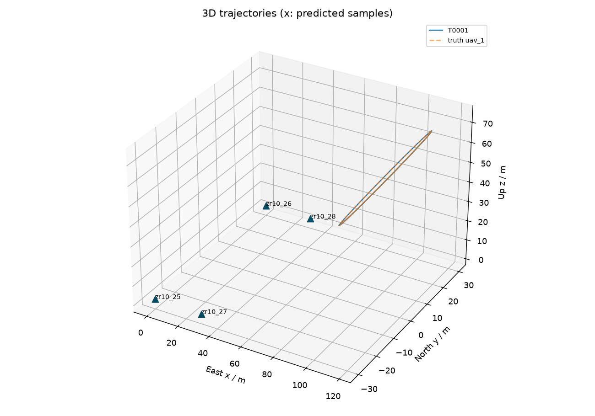
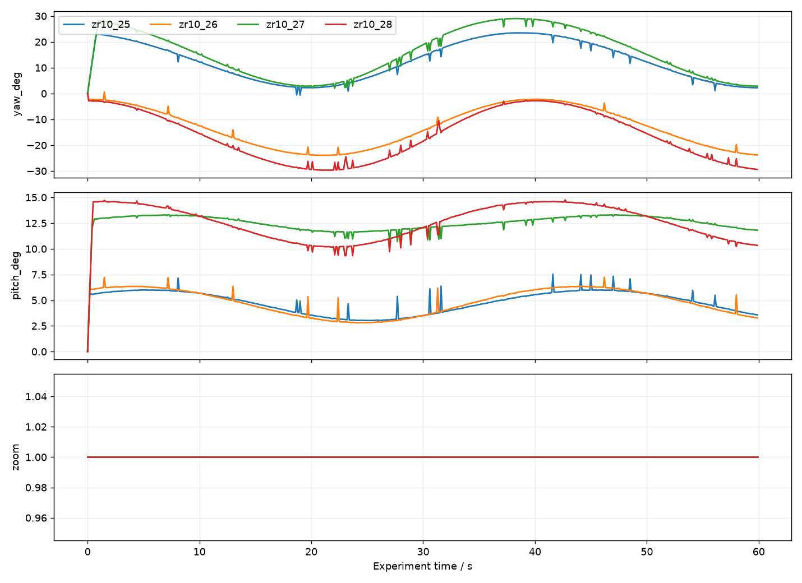
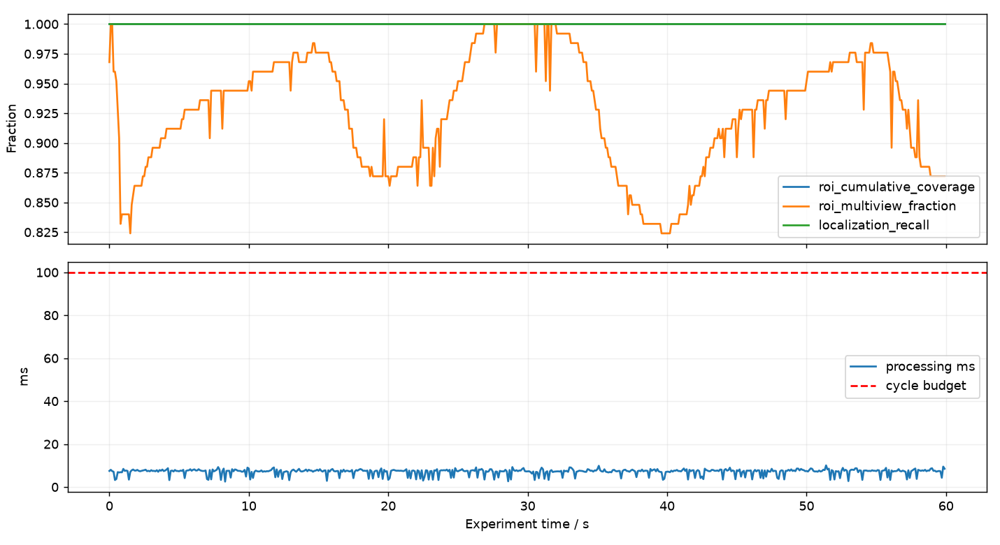

sim_20260907T105119_303860Z
测量轨迹与预测轨迹分别记录。仿真真值用于评估，不进入算法观测。周期耗时包含几何、融合、策略、指标与日志入队，不包含相机曝光和网络延迟。
| run_id | sim_20260907T105119_303860Z |
| mode | sim |
| completed | True |
| cycles | 600 |
| duration_s | 60.00000000000058 |
| cycle_ms_p50 | 7.520099985413253 |
| cycle_ms_p95 | 8.527295023668557 |
| cycle_ms_max | 10.056200029794127 |
| deadline_misses | 0 |
| localizations | 600 |
| track_ids | 1 |
| command_errors | 0 |
| roi_instant_coverage | 0.952 |
| roi_cumulative_coverage | 1.0 |
| roi_multiview_fraction | 0.872 |
| measured_track_count | 1 |
| predicted_track_count | 0 |
| localization_recall | 1.0 |
| cumulative_localization_recall | 1.0 |
| position_rmse_m | 0.06906753451464358 |
| evaluation_match_count | 600 |
| id_switches | 0 |
| longest_localization_gap_s | 0.0 |
| truth_count | 1 |


